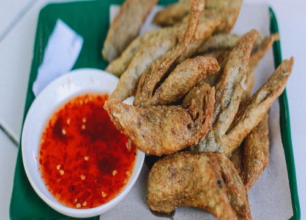
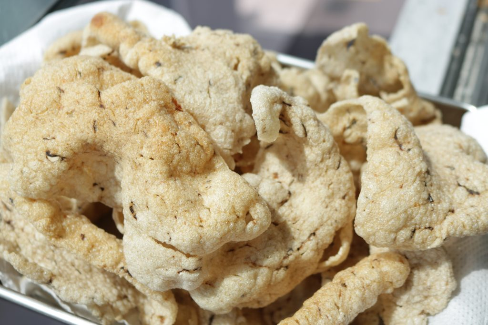

Delicious Delights
Terengganu may not be the most popular choice when you're looking for a vacation or adventure, but those who skip this beautiful state are missing out. Terengganu has many breathtaking surprises you should experience, including its unique and delicious cuisine. While you're there, here's a list of Terengganu food you must try:


NASI DAGANG
It is a mixture of normal and glutinous rice , eaten with spicy tuna fish curry and piquent vegetable pickles. Side dishes of boiled eggs and meat curry are available upon request.

NASI MINYAK
It comes with dates without coconut milk, braised chicken, kimchi and sambal belacan. Usually we provide this service at wedding receptions and special occasions.

NASI KERABU
Nasi kerabu consists of bright blue rice and is usually served on a plate with ulam, fried salted fish, fish crackers and other side dishes.
LAKSA KUAH PUTIH
Laksa is made using both wheat and rice flour and the dough is steamed. The gravy is made of fish meat which is boiled, pureed and later mixed with coconut milk. While kuah putih contains pepper
LAKSA KUAH MERAH
Laksa is made using both wheat and rice flour and the dough is steamed. The gravy is made of fish meat which is boiled, pureed and later mixed with coconut milk. While kuah merah contains red chilies

KEROPOK LEKOR MASAH
Keropok is made from minced fish and formed into a sausage shape. This is fried keropok lekor, long and chewy
KEROPOK LEKOR GORENG
Keropok is made from minced fish and formed into a sausage shape. This is fried keropok lekor, long and chewy

KEROPOK KEPING (PUTIH)
Keropok is made from ground fish and formed into a sausage-like shape. crispy thinner ones are called keropok kepiing (white).
KEROPOK KEPING (HITAM)
Keropok is made from ground fish and formed into a sausage-like shape. crispy thinner ones are called keropok kepiing (hitam).
PULUT LEPA
PULUT LEPA is a sticky rice roll with fish filling. The filling is boiled fish mixed with chopped onions, dried chillies and shredded coconut, boiled until dry, then rice is wrapped in banana leaves and cooked over a charcoal fire.
SATA
Sata is a blend of succulent fish meat that has been marinated with a variety of spices. Once the mixture is well combined, it is wrapped in banana leaves in a triangular shape then grilled over a charcoal fire.
NEKBAT
Nekbat is a sweet dessert made from rice flour and eggs. The ingredients are usually mixed and poured into moulds, covered with a lid and cooked until it’s spongy and cream in colour.